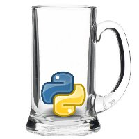

Kamarád Michal Švec se na Twitteru zmínil o setkání programátorů v Ruby a já se zeptal, jestli něco takového není i pro Python. Prý nikde nic, tak že to mám zorganizovat. A že prý nevadí, když tam o tom Pythonu budu vědět ze všech nejméně :)
No a tak se stalo. Nejdříve jsem navázal spolupráci se slovenskými Pyonýry pod taktovkou Synopsiho, dohodlo se první setkání jen tak v kroužku u piva a když šel vidět zájem a nadšení, začali jsme s ...